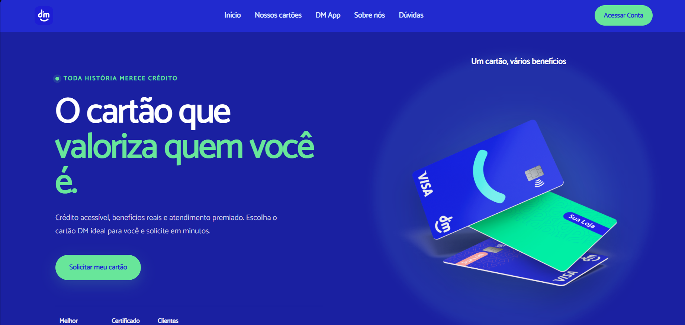

PROJETO ACADÊMICO · DM FINANCEIRA
Captação &
pré-qualificação
Plataforma para captar e pré-qualificar clientes interessados nos cartões da DM Financeira, considerando regras de aprovação, seleção de lojas e continuidade da solicitação.
ver contexto e participação ＋
O desafio
Organizar a entrada de solicitações e aplicar regras de pré-qualificação, disponibilidade de cartões e lojas compatíveis com o cliente.
Minha atuação
Atuei como Scrum Master, apoiando a organização do trabalho em sprints e o acompanhamento das entregas. Também participei do desenvolvimento como programadora, sendo responsável pela modelagem do banco de dados ao longo das etapas, pela integração das rotas com a aplicação e pela implementação dos sistemas de autenticação e comunicação entre clientes e atendentes.
Aprendizados
Desenvolvimento de aplicação web integrada a banco de dados, organização de backlog, trabalho colaborativo e acompanhamento de entregas.